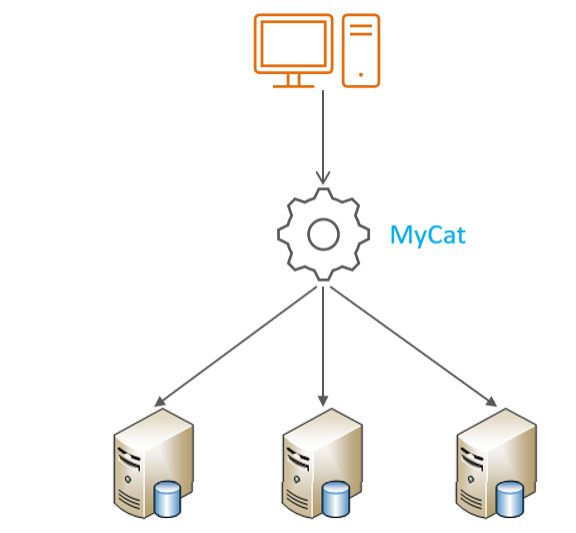
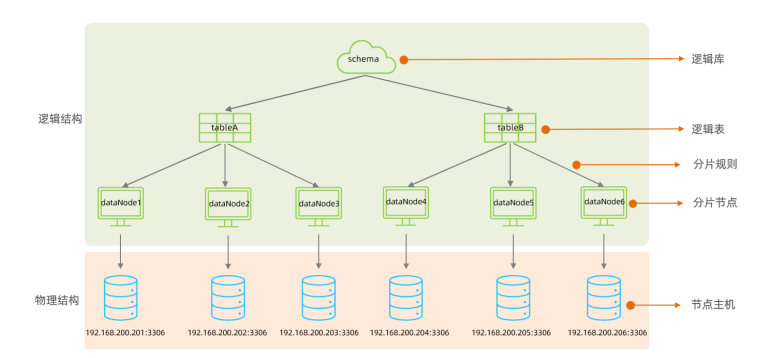
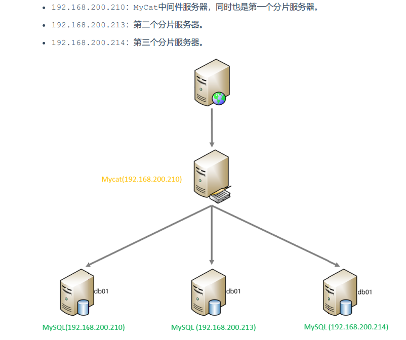
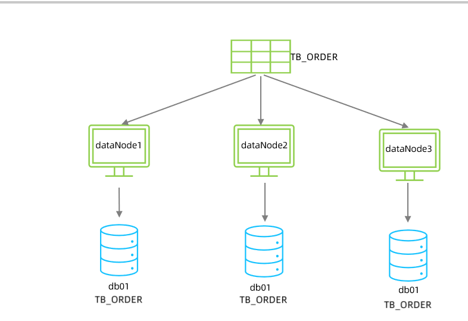

03-01MyCat 实现
不改一行代码，让应用以为自己在连一个库。这一页按「装 → 配 → 通 → 看落点 → 排错」走一遍：三台 MySQL 加一个 MyCat，把 TB_ORDER 分成三个节点，每一步都给能直接抄的配置和验收输出。
一屏速记合上笔记，这 4 条要能自己说出来
- MyCat 是代理，不是数据库。应用连它的
8066，它模拟 MySQL 协议，背后按分片规则把 SQL 发到不同的库。管理端口是9066。 - 三份配置管三件事：
schema.xml逻辑表对应哪些物理节点，rule.xml按什么规则分，server.xml谁能连、能连哪个逻辑库。 - 分片落点由映射文件决定。
auto-sharding-long默认只写到 1500 万，超出直接报错，不会自动加节点。 - 不带分片键的查询会广播到所有节点再合并；
sqlMaxLimit默认 100，所以「只查出 100 行」通常是它加的，不是数据丢了。
1. 它在哪一层
应用 → MyCat → 若干台 MySQL。应用只认识 MyCat 的地址和端口，背后有几台库、数据怎么分，全在 MyCat 的配置里。

为什么应用不用改代码：MyCat 实现了 MySQL 的服务端协议——握手、账号认证、COM_QUERY 都按 MySQL 的格式应答，所以 mysql 客户端、JDBC 驱动、现成的 ORM 都能直接连 8066。
| 端口 | 用途 | 怎么用 |
|---|---|---|
8066 | 数据端口 | 应用和客户端连这里，写普通 SQL。看到的是逻辑库、逻辑表。 |
9066 | 管理端口 | 运维用：看节点状态、心跳、连接数，改完配置执行 reload @@config;。 |
存储过程、部分函数、跨库 JOIN、DDL 广播的行为都和原生 MySQL 有差异。把它当成「会改写 SQL 的路由器」，别当成一个完整的数据库。
2. 逻辑与物理
MyCat 的所有配置，本质就是一张逻辑到物理的映射表。这张图值得先看两分钟：

dataNode 就是那根线。| 名词 | 在哪配 | 是什么 |
|---|---|---|
| 逻辑库 schema | schema.xml / server.xml | 应用看到的库名，比如 DB01。物理上可能对应三个 db01。 |
| 逻辑表 table | schema.xml | 应用看到的表名，比如 TB_ORDER。它背后可能是三张同名表。 |
| 分片规则 rule | rule.xml | 一行数据该去哪个节点。逻辑表通过 rule="..." 引用它。 |
| 分片节点 dataNode | schema.xml | 「某个 dataHost 上的某个物理库」，比如 dhost1 上的 db01。 |
| 节点主机 dataHost | schema.xml | 一台物理 MySQL：连接串、账号、连接池、读写/切换策略。 |
逻辑名给应用看，物理库才是数据。改物理库的地址、加一个分片，都只改配置，应用侧一行代码不动——这正是用中间件的理由。
3. 装起来
四台机器（210 同时当 MyCat 和第一个分片）：

.210，三台 MySQL 分别是 .210 / .213 / .214，每台都建 db01。- 三台 MySQL 各建一个库三台分片 · mysql 客户端
CREATE DATABASE db01 DEFAULT CHARSET utf8mb4;三台的库名、字符集、排序规则要一致——导数据时不一致会在字符串比较上出怪问题。
- MyCat 这台装 JDKMyCat 机器 · Linux 终端
java -version输出 1.8.x。MyCat 1.6 是按 JDK 8 编译的，用 11/17 起有可能因为模块访问限制起不来。
- 解压并启动MyCat 机器 · Linux 终端
tar -zxvf Mycat-server-1.6-RELEASE-*.tar.gz -C /usr/local/ /usr/local/mycat/bin/mycat start常用命令：
bin/mycat start/stop/restart/status。启动脚本会拉起一个 JVM，日志在logs/wrapper.log。 - 确认端口在听MyCat 机器 · Linux 终端
netstat -tlnp | grep -E '8066|9066'两行都在。
8066没起来先看logs/wrapper.log的最后 50 行，多数是 JDK 版本、内存不够，或者schema.xml写坏了。
MyCat 1.6 的 lib/ 里自带 mysql-connector-java-5.1.x，它不认识 8.0 默认的 caching_sha2_password 认证，连过去会报认证失败或 Unknown character set。
做法：删掉 lib/ 下的 5.1.x jar，放入 mysql-connector-java-8.0.x.jar；dataHost 写 dbDriver="jdbc"；URL 带上 serverTimezone。改完 bin/mycat restart。
4. 三份配置
三个文件各管一件事，改完都要 reload 或重启才生效。下面这份配置可以直接抄，IP、密码换成自己的。
4.1 schema.xml — 谁对应谁
<?xml version="1.0"?>
<!DOCTYPE mycat:schema SYSTEM "schema.dtd">
<mycat:schema xmlns:mycat="http://io.mycat/">
<schema name="DB01" checkSQLschema="true" sqlMaxLimit="100">
<table name="TB_ORDER" dataNode="dn1,dn2,dn3"
rule="auto-sharding-long" primaryKey="id" />
</schema>
<dataNode name="dn1" dataHost="dhost1" database="db01" />
<dataNode name="dn2" dataHost="dhost2" database="db01" />
<dataNode name="dn3" dataHost="dhost3" database="db01" />
<dataHost name="dhost1" maxCon="1000" minCon="10" balance="0"
writeType="0" dbType="mysql" dbDriver="jdbc"
switchType="1" slaveThreshold="100">
<heartbeat>select user()</heartbeat>
<writeHost host="master" user="root" password="Root@123456"
url="jdbc:mysql://192.168.200.210:3306?useSSL=false&serverTimezone=Asia/Shanghai" />
</dataHost>
<!-- dhost2 指向 192.168.200.213，dhost3 指向 192.168.200.214，其余同上 -->
</mycat:schema>URL 里 serverTimezone 不能省，否则 8.0 驱动会报时区错误；连接字符集默认跟随服务端，确有必要再加 characterEncoding。
三个标签的常用属性，只列真会改的：
| 标签 | 属性 | 作用 |
|---|---|---|
<schema> | name | 逻辑库名，应用 USE 的就是它。 |
checkSQLschema | true 时把 SQL 里的库名前缀去掉，避免 DB01.tb 被原样发给物理库。 | |
sqlMaxLimit | 不带 LIMIT 的查询自动补一个，默认 100。防止一次拉回全表把 MyCat 内存打爆。 | |
dataNode | 不写 rule 时的默认节点。 | |
<table> | name | 逻辑表名，大小写要和物理表一致（Linux 上 MySQL 表名区分大小写）。 |
dataNode | 多个节点用逗号分隔，顺序就是分片索引 0、1、2…。 | |
rule | 引用 rule.xml 里的 tableRule 名字。不写就是单节点。 | |
<dataHost> | balance | 0 不开读写分离，读也走 writeHost；1 双主双从都可读；2 随机读；3 按主库压力。只做分片时填 0 最省心。 |
writeType | 0 写第一个 writeHost；1 随机写。 | |
switchType | -1 不自动切换；1 默认自动切；2 依据 MySQL 主从状态切。 | |
dbDriver | jdbc 用 JDBC 驱动（8.0 必须）；native 是老实现。 |
4.2 server.xml — 谁能连
<user name="root" defaultAccount="true">
<property name="password">Root@123456</property>
<property name="schemas">DB01</property>
</user>
<user name="reader">
<property name="password">Root@123456</property>
<property name="schemas">DB01</property>
<property name="readOnly">true</property>
</user>这里的 DB01 是逻辑库，不是物理库 db01。用户只能看见 schemas 里列出的库。
放开 <privileges> 后，dml="0110" 这四位依次是 insert / update / select / delete，1 表示允许。所以 0110 = 不能插、能改、能查、不能删。
课程里这段是注释掉的，真要按表授权时才用得上；一般用 readOnly 分读写账号就够。
4.3 rule.xml — 怎么分
<tableRule name="auto-sharding-long">
<rule>
<columns>id</columns>
<algorithm>rang-long</algorithm>
</rule>
</tableRule>
<function name="rang-long" class="io.mycat.route.function.AutoPartitionByLong">
<property name="mapFile">autopartition-long.txt</property>
</function>columns 是分片键，algorithm 指向下面的 function。真正的区间写在 conf/autopartition-long.txt 里，默认只有三行：
# range start-end ,data node index
# K=1000,M=10000.
0-500M=0
500M-1000M=1
1000M-1500M=2第三行的 M 是 10000（文件头注释已写明），所以 500M = 500 万。等号右边是 dataNode 列表里的下标：0 对应 dn1，1 对应 dn2，2 对应 dn3。
规则文件只定义了三段，没有第四段。id 超出 1500 万时找不到任何可用节点，插入直接失败。它不是「自动扩容」，也不会把数据堆到最后一个节点——除非你在 function 里显式配置 defaultNode。
要加区间就改这个文件、加一行 1500M-2000M=3 并在 schema.xml 里加 dn4，改完 reload。
5. 跑通：看数据落在哪
目标是验证一件事：同一张逻辑表，不同的 id 真的落到了不同机器上。

TB_ORDER 分成三个节点，每个节点是一台独立 MySQL 上的 db01.TB_ORDER。- 连 MyCat，确认逻辑库任意机器 · Linux 终端
mysql -h192.168.200.210 -P8066 -uroot -pSHOW DATABASES;列表里是
DB01，不是db01。看到db01说明你连的是 MySQL 的 3306，不是 MyCat 的 8066。 - 建表MyCat · 8066
USE DB01; CREATE TABLE TB_ORDER ( id BIGINT(20) NOT NULL, title VARCHAR(100) NOT NULL, PRIMARY KEY (id) ) ENGINE=InnoDB DEFAULT CHARSET=utf8mb4;这条 DDL 会被下发到三个分片，三台都会出现
db01.TB_ORDER。到任意一台确认一下：SHOW CREATE TABLE db01.TB_ORDER\G三台都有这张表，结构一致。
- 插数据，跨越三个区间MyCat · 8066
INSERT INTO TB_ORDER(id,title) VALUES (1,'goods1'), (2,'goods2'), (5000000,'goods500w'), (5000001,'goods500w+1'), (10000000,'goods1000w'), (15000000,'goods1500w');再插一条越界的，看它报不报错：
INSERT INTO TB_ORDER(id,title) VALUES (15000001,'goods-over');最后一条被拒绝。前六条全部成功——这就是规则文件只写到 1500 万的直接后果。
- 到三台分片上分别看.210 / .213 / .214 · 各自的 3306
连到每台 MySQL 的 3306，分别执行同一条：
SELECT id, title FROM db01.TB_ORDER ORDER BY id;三台各自只看到自己那一段，合起来才是 MyCat 里看到的全部——这一眼就是分片。
预期落点（对照下图）：
autopartition-long.txt 的三段区间，以及文件里不存在的第四段。边界值到底归哪一段与版本实现有关，5000000 和 15000000 这两条正好用来实测。| id | 落在 | 怎么判断的 |
|---|---|---|
1 / 2 | dn1（.210） | 落在 0-500M=0，下标 0 → dataNode 列表第一个 |
5000000 | dn2（.213） | 边界值归后一段：500M-1000M=1 |
5000001 | dn2（.213） | 同上 |
10000000 | dn3（.214） | 1000M-1500M=2 |
15000000 | dn3（.214） | 仍在第三段上界内 |
15000001 | — | 超出最后一段，找不到节点，报错 |
不同版本的区间判断在边界上可能差一，5000000 与 15000000 这两条正好用来验。落点不对不影响理解，记下你所用版本的行为即可。
6. 分片规则速查
只列课程涉及和实际最常用的。规则名写在 schema.xml 的 rule 属性里，具体算法在 rule.xml。
| 规则名 | 算法类 | 依据与适用 |
|---|---|---|
auto-sharding-long | AutoPartitionByLong | 范围，区间写在映射文件里。适合按 ID 段或时间范围查的场景；缺点是新数据全落在最后一段，扩节点要改文件并迁数据。 |
mod-long | PartitionByMod | 取模，id % count。count 必须等于节点数。分布最均匀、适合随机读写；但节点数一变，几乎所有数据都要重算位置。 |
hash-int | PartitionByFileMap | 按映射文件查表，不是真的算哈希——名字容易误解。适合取值有限的枚举（省份、类型）。 |
sharding-by-intfile | PartitionByFileMap | 和上一条同一个实现，区别只在映射文件的内容与语义。课程里讲「枚举分片」用的就是它。 |
consistent-hash | ConsistentHash | 哈希环，扩容时只迁移相邻一段数据。节点少时分布可能不均，上线前先用真实数据看分布。 |
sharding-by-date | PartitionByDate | 按日期，配 dateFormat / sBeginDate / sPartionDay。适合日志、流水；要预留足够的分片，到期加节点。 |
查询经常带范围（按时间段、按 ID 段）→ 范围分片，只扫相关节点。
只有等值查询、要求分布绝对均匀 → 取模。
两种都怕扩容：范围要改文件迁边界数据，取模要重算全部。真要「扩容只迁一部分」，用一致性哈希。
7. SQL 怎么被路由
MyCat 拿到一条 SQL，先解析出分片键的值，再决定发给几个节点。分片键进没进 WHERE，成本差一个数量级。
| SQL 写法 | 下发 | 说明 |
|---|---|---|
WHERE id = 5000001 | 1 个节点 | 算得出确定的下标，直接发 dn2。 |
WHERE id BETWEEN 1 AND 4000000 | 1 个节点 | 范围分片能算出落在 dn1。 |
WHERE title = 'goods1' | 3 个节点 | 没有分片键，广播到所有节点，结果回 MyCat 合并。节点越多越慢。 |
ORDER BY id LIMIT 10 | 3 个节点 | 各节点各取 10 条，MyCat 归并排序再取前 10。 |
LIMIT 100000, 10 | 3 个节点 | 每个节点要取 100010 条，内存里排序。深分页在分片下代价翻倍。 |
SELECT COUNT(*) | 3 个节点 | 各节点算部分和，MyCat 相加。SUM / MAX 同理。 |
两条必须记住的默认行为：
sqlMaxLimit= 100。不带LIMIT的查询会被自动补成LIMIT 100。所以「MyCat 里只查出 100 行、直连分片却有 3000 行」不是数据丢了，是它加的限制。- 结果集在 MyCat 内存里合并。广播查询、跨节点排序、大结果集聚合都吃 MyCat 的堆内存。查询越「不带分片键」，越容易把它拖垮。
想确认某条 SQL 到底发给了谁，最直接的办法不是猜，是到分片上开 general log 看：
SET GLOBAL general_log = ON;
SET GLOBAL log_output = 'TABLE';
SELECT event_time, argument FROM mysql.general_log
WHERE argument LIKE '%TB_ORDER%' ORDER BY event_time DESC LIMIT 20;在 MyCat 里执行一条查询，三台上都能看到对应语句，就说明它是广播的；只有一台有，就是命中了分片。
8. 八个坑
| 现象 | 原因 | 怎么办 |
|---|---|---|
连不上，报认证失败或 Unknown character set | 5.1 驱动 + 8.0 的 caching_sha2_password | 换 8.x 驱动，dbDriver="jdbc"，URL 加 serverTimezone |
Table 'db01.TB_ORDER' doesn't exist | schema.xml 里的表名大小写与物理表不一致（Linux 上区分） | 两边统一，建议全小写 |
| 查询只返回 100 行 | sqlMaxLimit 默认值 | 显式写 LIMIT，或调大 sqlMaxLimit |
| 跨分片 JOIN 很慢或结果不对 | JOIN 被拆到各节点执行，再在内存合并 | 用 ER 分片让关联表同节点，或冗余字段、应用层拼装 |
| 插入不带 id 报错 / 三台主键重复 | 各分片各自自增，没有全局序列 | 业务侧生成雪花 ID，或配 sequnceHandlerType 全局序列 |
| 一个事务写两个分片，部分成功 | 本地事务管不到另一个库 | 设计上让一个事务只落一个分片；确有需要才上 XA / 分布式事务框架 |
ALTER TABLE 只在部分节点生效 | DDL 广播的行为与版本、表配置有关 | 逐节点执行后 reload @@config;，或停机窗口统一改 |
| 改完配置没反应 | 只改了文件，没让 MyCat 重读 | 9066 端口执行 reload @@config;，改 server.xml 要重启 |
9066 管理端口常用的三条：
mysql -h192.168.200.210 -P9066 -uroot -p
show @@datanode; -- 各节点是否存在、是否可用
show @@heartbeat; -- 心跳状态，判断分片是不是活着
reload @@config; -- 重读 schema.xml / rule.xmlshow @@heartbeat 里某个节点是 STATUS: INIT 或一直失败，先查那台的 MySQL 是否在跑、账号密码对不对，再去应用侧排查。
自测三问先自己答，再展开对照
Q1为什么在 MyCat 里 SHOW DATABASES 看到的是 DB01，而物理库叫 db01？
DB01 是 schema.xml 里定义的逻辑库，也是 server.xml 给用户授权的库；db01 是 dataNode 的 database 属性指向的物理库。
两者名字不同完全合法。好处是：以后把物理库改名、搬到别的机器，只改 dataNode，应用连接串和 SQL 都不用动。
Q2插入 id=16000000 报错，是 MyCat 坏了还是配置问题？
配置问题，而且行为是设计好的：autopartition-long.txt 只定义到 1500 万，超出的值找不到任何节点。
要么加区间、加节点，要么给 function 配 defaultNode 让它兜底到一个节点（但那个节点会变成热点）。它不会自动扩容。
Q3同一条查询，带 id 和不带 id，为什么耗时差好几倍？
带 id 时 MyCat 算得出唯一节点，只发一台；不带 id 时没有分片键，只能广播到三台各查一遍，再把结果拉回 MyCat 合并排序。
节点越多、结果集越大，差距越明显。这也是选分片键时「要覆盖最高频查询条件」的原因。
资料
参考：MyCat 官网 · MyCat-Server（GitHub） · ShardingSphere 文档 · MySQL 8.0 账号与认证
核对日期 2026-11-26。本页配置按 MyCat 1.6 的文档与课程内容整理，没有在真实的三节点环境里逐条执行；第一次搭建时以每步的验收输出为准，尤其注意 MySQL 8.0 的驱动与认证差异。